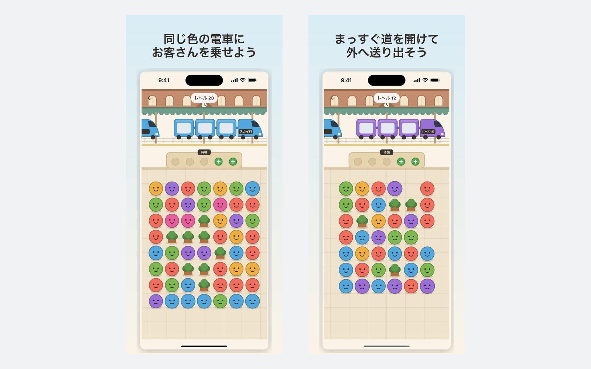
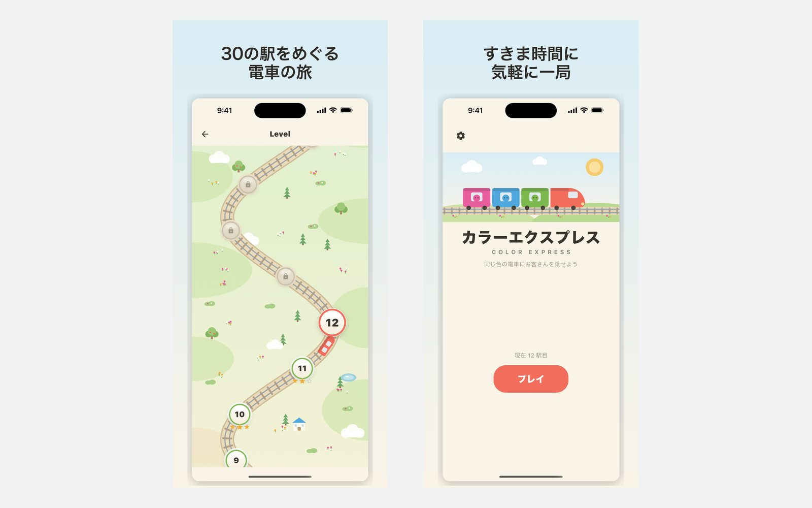

ルールは一つ、そのぶん厳格です
盤の端まで一度も途切れない直線 — 上・下・左・右。曲がるのは道ではありません。ゲームの残りはすべて、この一文から出てきます。
3席の色つき電車がホームに停まります。色の合うお客さんをタップすると乗車しますが、外へ出る直線が一本、端まで空いていなければなりません。制限時間もライフも会員登録もありません。

このゲームの発想
色は1秒で合います。難しいのは、そのお客さんを外へ出すことです。お客さんは上下左右のどれか一方向が盤の端まで完全に空いているときだけ出られます。曲がる道は道ではありません。だから盤は外側から読むことになります。端を片づけて奥の列を開け、さらにその奥を開ける。
入っているもの
盤の端まで一度も途切れない直線 — 上・下・左・右。曲がるのは道ではありません。ゲームの残りはすべて、この一文から出てきます。
すべての配置は生成後にソルバーが検査します。必ず解けること、そして同時にベンチなしでは解けないこと。どちらかを満たさない配置は捨てられ、アプリには入りません。
70レベルそれぞれに検証済みの配置が6つあり、その中から一つをランダムに選びます。やり直しも同じです。いま失敗した盤と、次に始まる盤は別の盤です。
色の違うお客さんは、席のごく少ないベンチで待ちます。ベンチが埋まって道もなければ、その面は終わりです。後半はお客さんが増えるのではなく、ベンチが減ります。
評価は点数ではなく、ベンチに何人座らせたかで決まります。スター3つは、ベンチをほとんど使わなかったという意味です。
1秒考えても1分考えても同じです。減るものも、尽きるものも、明日また来いと言うものもありません。

どこから来たか
2026年7月、FlutterとFlameで作った色合わせのプロトタイプから始まりました。マス目の上のお客さんと、一度に3人を運ぶエレベーター。
ルールはすぐに変わりました。もとは迷路のように道を探す方式でしたが、それでは盤を一目で読めません。これを端まで届く一本の直線に変えたことで、すべての手が目に見えるようになり、そのぶん計画するのは格段に難しくなりました。
エレベーターは電車になり、色は7種類に増え、レベルは手作りをやめました。いまはソルバーが70レベルを、配置6つずつ生成して検査しています。
プライバシー
アカウントも、クラウドも、記録を送るランキングもありません。進行状況は端末のストレージにある数個の数字で、アプリを削除すれば一緒に消えます。本作は無料で広告が入るため、Google AdMobが通常の広告識別子と端末情報を収集します。その内容はプライバシーポリシーにすべて記載しています。
無料で、オフラインでも動きます。ネットワークは広告にのみ使用します。App StoreとGoogle Playで近日公開。